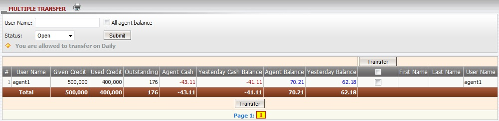

Transfer
Definition:
Transfer refers to the amount of money that needs to transfer from sender to receiver for Win/Loss payment purposes. We have 2 types of transfer: single transfer or multiple transfers. You can only make the transfer if you're allowed to transfer on that day, and this is called transfer condition including: daily transfer and weekly transfer (Mon – Sun).
Note:
- A message will appear to notify you the allowed date to make the transfer.
- Transfer transaction must be done during 12PM to 11:59 PM (GMT +8).
- Transfer can only be made to account which has status: Open, Closed, Suspended or Disabled.
- Yesterday balance > 0 --> master will pay to agent.
- Yesterday balance < 0 --> master will receive from agent.
- Sub account must have the transfer permission granted in order to make the transfer.
- To edit Transfer condition of agent, master has to be allowed to transfer on Daily.

figure 1.1
Term definition:
- Given Credit: credit amount which was initially given to each agent.
- Used Credit: credit amount which was initially given to members by each agent.
- Outstanding: total agent’s share from member stakes based on his/her position taking on running/waiting tickets.
- Agent Cash: total agent win/loss.
- Yesterday Cash Balance: total agent win/loss till yesterday.
- Agent Balance: the total amount that master will receive from or pay to agent.
- Yesterday Balance: the total amount that master will receive from or pay to agent till yesterday.
How to understand the report:
From the figure above, agent1 was initially given 500,000, total his/her share based on his/her position taking on running/waiting tickets are 176, currently he/she will receive 62.18 from master and agent total balance (include today win/loss) was 70.21.
How to make the transfer:
Click on Yesterday Balance amount of each agent to make the transfer or check on column ‘Transfer’ then click ‘Transfer’ button to make a multiple transfer to all agents whose yesterday balances are different from 0.